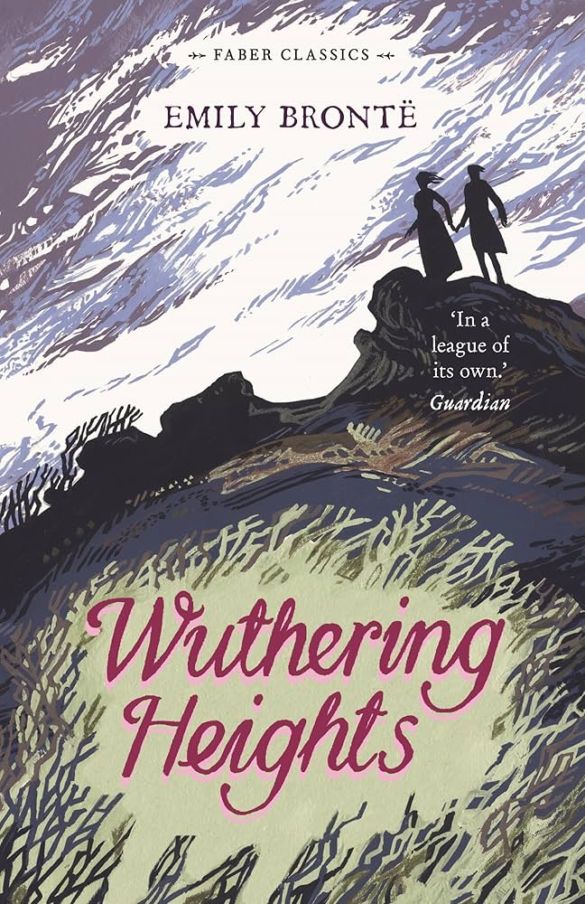
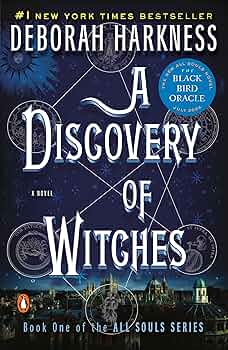
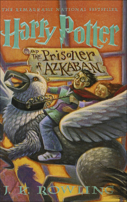

Last year, I traveled to Jackson Hole, Wyoming for the first time. The mountains were gorgeous and all of the wildlife was incredible. I saw lots of bison and bears, a moose, elk, and a bald eagle. I went rafting down a river, visited Yellowstone, hiked, and went to the rodeo. I loved visiting so much and can't wait to go back, it's a really magical place.
One of my favorite restaurants is Bacaro in Providence, RI. The ambience is amazing, the food is incredible, and the service is unmatched. The wine-selection is extensive and the cocktails are classic but perfect. The baked pink pasta is to die for, as well as the scallops and celery salad. The menu changes frequently with whatever is in season locally and the ingredients are top-notch.
My favorite food is sushi, specifically spicy tuna rolls and tamago nigiri. When I prepare it myself, I like to make the rolls small rather than thick and enjoy trying to make it inside-out style with the rice on the outside. I eat it with lots of soy sauce and sometimes spicy mayo.
| Book Name | Cover | Author | Synopsis |
|---|---|---|---|
| Wuthering Heights |  | Emily Brontë | A classic Gothic novel detailing obsessive love and vengeance between Catherine, Heathcliff, and their families on the moors. |
| A Discovery of Witches |  | Deborah Harkness | Diana Bishop, a witch and professor of alchemy, discovers a lost, enchanted manuscript at Oxford University and finds herself entangled with centuries-old vampire, Matthew Clairmont. Chaos ensues in the magical world as they unlock the secrets of the manuscript and find themselves in a forbidden relationship. |
| City of Bones | Cassandra Clare | After witnessing a murder, Clary Fray discovers a secret world of demons and the Shadowhunters that destroy them. | |
| Harry Potter and the Prisoner of Azkaban |  | J.K. Rowling | Harry returns to Hogwarts for his third year after a murderous fugitive, Sirius Black, escapes from Azkaban. |